图片仅供参考，展示产品类型。
手工工具
1,250 克玻璃纤维柄斧 (劈柴斧,锻造斧头,橡胶握把)
锻造斧头重 1,250 克,配低振动玻璃纤维柄和橡胶握把,适用于工地的劈柴、砍伐和木工作业。
1,250 克斧头的斧是工地、工场和林业木作的全能工具:劈柴和木桩、砍去树枝、加工结构木材。斧头由碳钢模锻而成,刃口淬硬并涂漆;带软质握区的玻璃纤维柄能缓冲冲击,不像木柄那样在潮湿和霜冻中变形。专业买家期望斧头装配无间隙(拔出和弯曲试验)、刃口磨削均匀并配刃口保护套、尺寸和重量符合 DIN 7287,以及握把材料经多环芳烃检测。
技术参数
| 斧头重量 | 1,250 克 |
|---|---|
| 刃口硬度 | HRC 47–53 |
| 斧柄 | 玻璃纤维柄,握区为 PP + TPR,斧头与柄之间有橡胶环 |
| 认证 / 体系 | TÜV/GS |
| 包装 | 纸箱 |
| 海关编码（HS） | 82014000 |
欧盟标准与法规
Verordnung (EU) 2023/988产品通用安全法规(GPSR):欧盟责任人、标识、可追溯性、安全提示REACH (EG) Nr. 1907/2006化学品法规:与皮肤接触的橡胶/塑料握把的多环芳烃限值(附录 XVII 第 50 项)、SVHC 义务ProdSG § 20 (GS-Zeichen)由认可检测机构颁发的自愿性 GS“安全检测”标志DIN 7287 / DIN 7294德国零售商对 1,250 克斧所引用的 DIN 斧类标准ISO 6508-1金属材料——刃口硬度的洛氏硬度(HRC)试验ISO 9227人工气氛中的腐蚀试验——涂层的盐雾试验
搭配产品

本类别其他产品

法兰克福式尖头钢铲 （木柄）淬硬钢尖头铲，用于铲装建筑垃圾、砂石和砂浆。
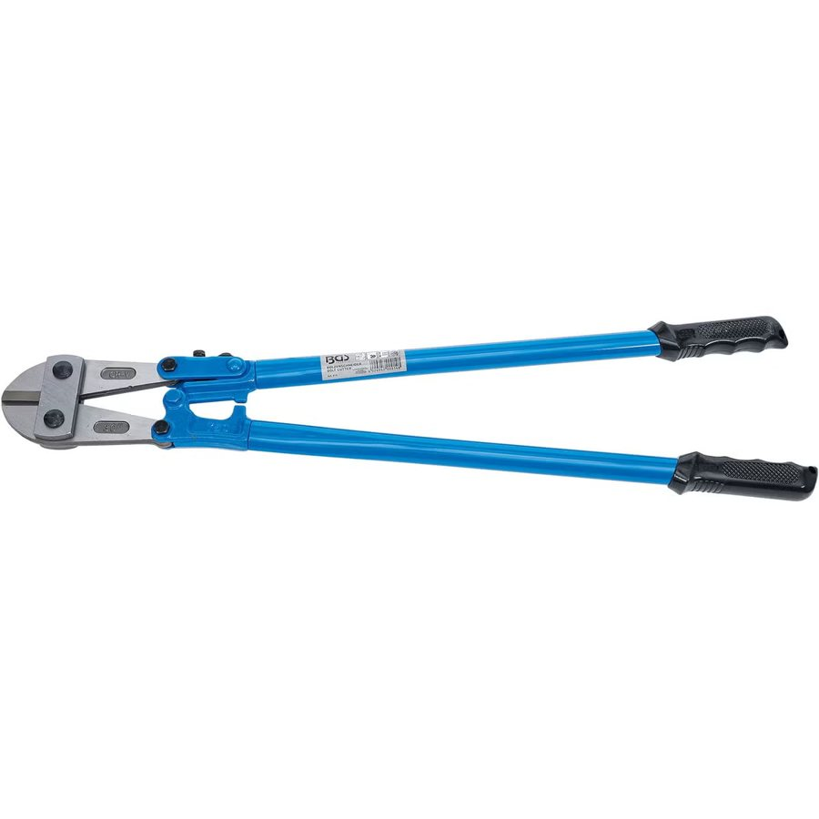
750毫米 （30英寸）重型断线钳重型断线钳，用于剪断钢筋丝、链条、挂锁和螺栓。

750毫米撬棍/拔钉撬棒 （羊角撬棍）带拔钉口的锻造撬棍，用于拆除、模板、地板和踢脚线拆卸。
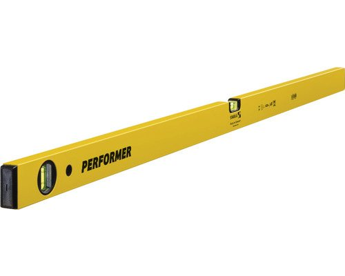
1200毫米铝合金水平尺 （箱型材, 三水泡）抗扭铝合金水平尺，配抗震水泡，用于门框、龙骨和找平层的校准。
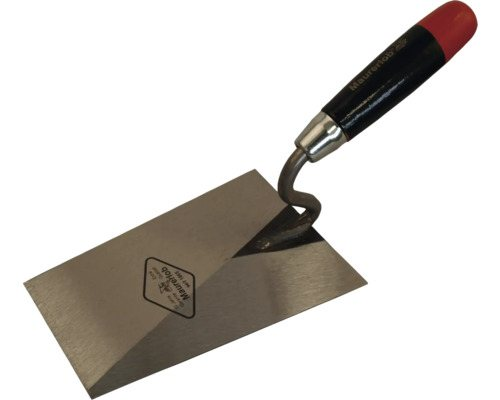
180毫米砌筑抹刀 （钢制, 木柄）淬硬钢刀片砌筑抹刀，用于取料、涂抹和刮平砂浆。
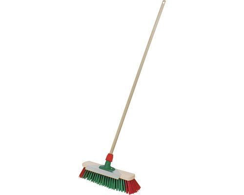
400毫米道路/工地扫帚 （木柄）硬质塑料刷毛的结实道路扫帚，用于清扫工地、进出通道和院落。
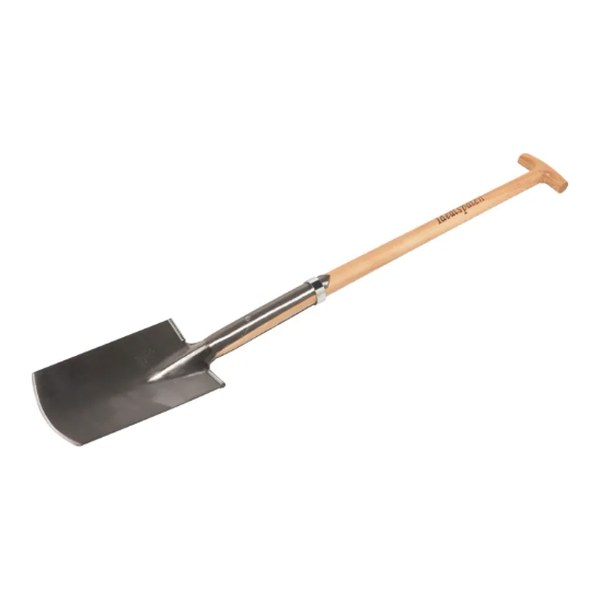
钢制方头铁锹 （木柄, D形手柄, 建筑/挖掘用）平口方头钢锹，用于开挖沟槽、基础边缘和土方作业。

600克木工羊角锤 （带磁性钉槽）锻造木工锤，带网纹锤面、羊角和磁铁，用于屋架、模板和木结构施工。
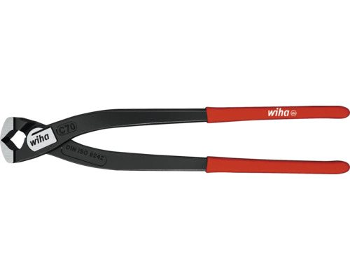
250毫米扎钢筋钳 （Monierzange, 钢丝剪钳）锻造扎钢筋钳，用于绑扎钢筋时剪断和绑扎扎丝，也可拔钉。
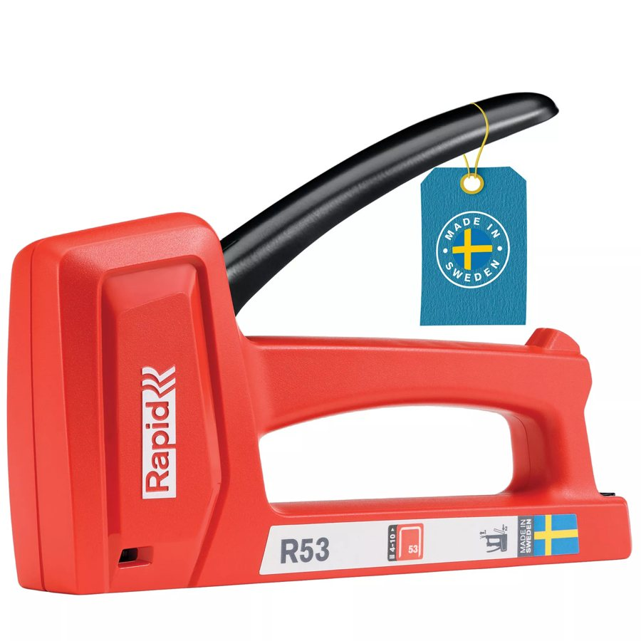
4–14毫米手动订枪 （金属机身, 弹簧击发）结实的手动订枪，用于工地上固定薄膜、隔汽层、保温卷材和木条。
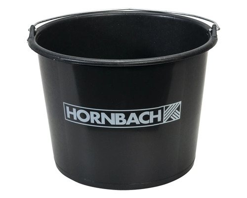
12升建筑塑料桶 （PE, 金属提手）抗冲击12升水桶，带刻度和钢提手，用于工地上盛放砂浆、抹灰料、胶粘剂和水。
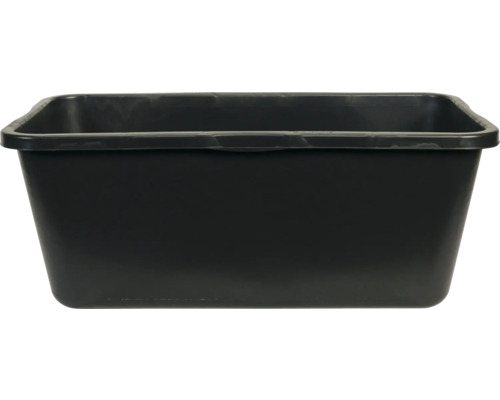
65升砂浆盆 （塑料）抗冲击65升砂浆盆，带提手，用于搅拌和存放砂浆、抹灰料和地坪砂浆。
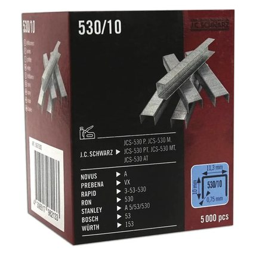
53 型码钉 (U 型钉),镀锌,6–14 毫米 (每包 5,000 或 10,000 枚)镀锌 53 型细丝码钉(钉背 11.4 毫米),长度 6–14 毫米——手动订书机的配套耗材。
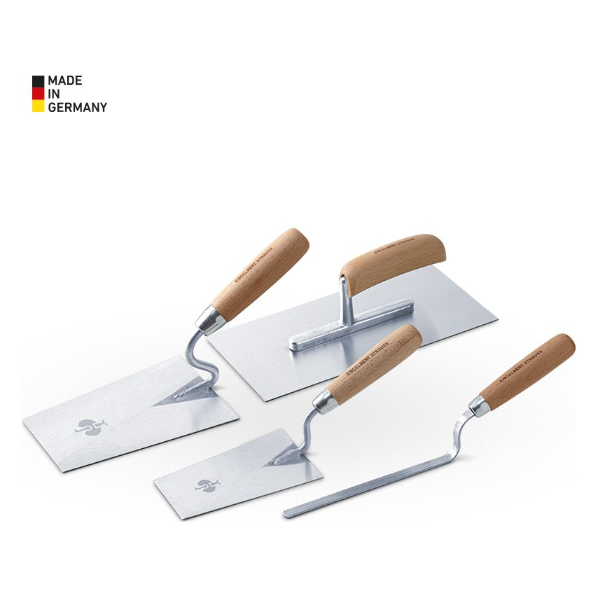
泥工泥刀套装 4 件 (砌刀、抹灰刀、勾缝刀、抹平刀,木柄)四把泥刀成套:砌刀、伯尔尼式抹灰刀、汉堡式勾缝刀和抹平刀,覆盖完整的砌筑和抹灰流程。

八角锤凿子套装 (八角锤约 1,000 克、平凿和尖凿 250 毫米、护手)八角锤配两支手凿和护手,用于凿削、抹灰和砌体作业。

锤用山核桃木替换锤柄 (大锤/劈柴锤用 900 毫米,木工/钳工锤用 360–400 毫米),含楔子带楔子的直纹山核桃木柄,用作大锤、劈柴锤、木工锤和钳工锤的备件。

荷尔斯泰因式铲 130 厘米 (混凝土铲)配 130 厘米木柄的宽幅钢铲,用于铲取混凝土、沙子、砾石和砂浆。

手锯/狐尾锯 550 毫米550 毫米锯片、硬化尖齿、塑料手柄的狐尾锯,用于方木、板条和板材。
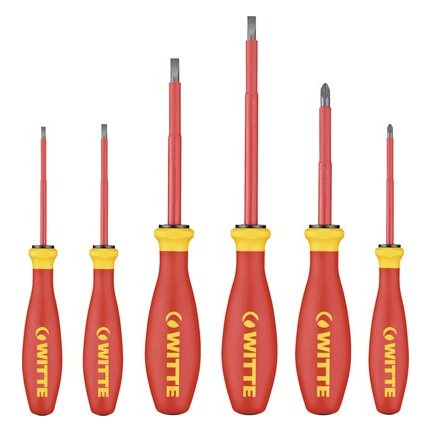
VDE 1000 V 螺丝刀套装 (6 件)6 件 1000 V 绝缘螺丝刀套装(一字、十字、单极验电螺丝刀),用于电气安装和维护。

钳子套装 (钢丝钳、斜口钳、水泵钳)由钢丝钳、斜口钳和水泵钳组成的 3 件钳子套装,用于装配、安装和维修。

砌筑锤 600 克经典砌筑锤,锤头 600 克:锤面用于敲击,刃口用于劈分和修整砖块。

不锈钢抹平刀 280 × 130 mm0.7 mm 不锈钢无齿抹平刀,用于抹平和刮平粉刷、腻子和细抹灰表面。
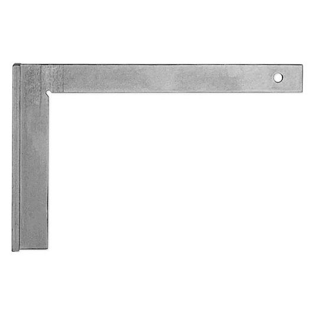
挡块直角尺 / 木工角尺 300 mm带 300 mm 不锈钢尺身和固定挡块的直角尺,用于划线、检查和校正直角。

凿子套装 (4 件,6–25 毫米)4 把 6、12、19、25 mm 宽的铬钒钢平凿,用于木材上的榫眼、槽口和五金件凹槽。

钳工锤 500 克 （DIN 1041 型），白蜡木手柄德式经典钳工锤：锻造钢锤头、抛光锤面、白蜡木手柄。

橡胶锤 / 安装锤，白色，16 盎司 （约 454 克）不留痕白色橡胶锤，适用于瓷砖、地板、木工和车身作业。
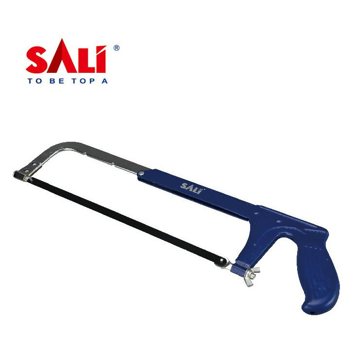
金属手锯弓 300 毫米，可调钢制锯弓，含锯条可调钢制锯弓，铝压铸手柄，随附锯条。
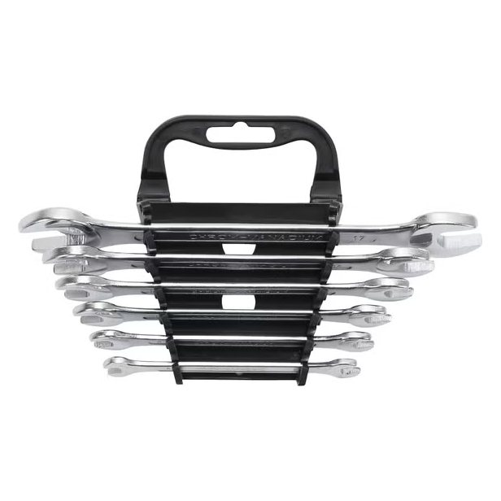
双头开口扳手8件套 6–22 mm 铬钒钢铬钒钢公制开口扳手套装。

3/8"棘轮套筒套装 铬钒钢3/8"方头套筒套装，配可逆棘轮扳手。
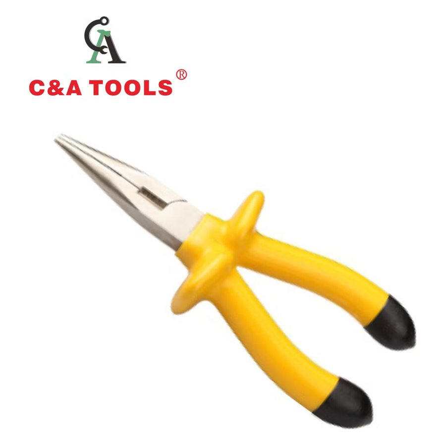
尖嘴钳 160 mm 绝缘手柄160 mm尖嘴钳，双组份手柄。
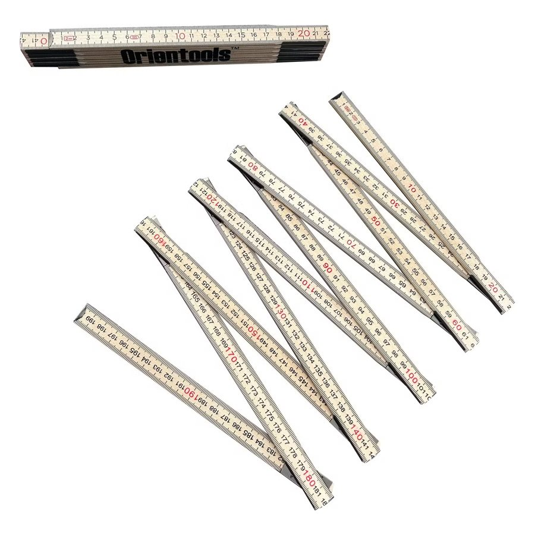
2米木质折叠尺 10节2米木质折叠尺，弹簧关节。
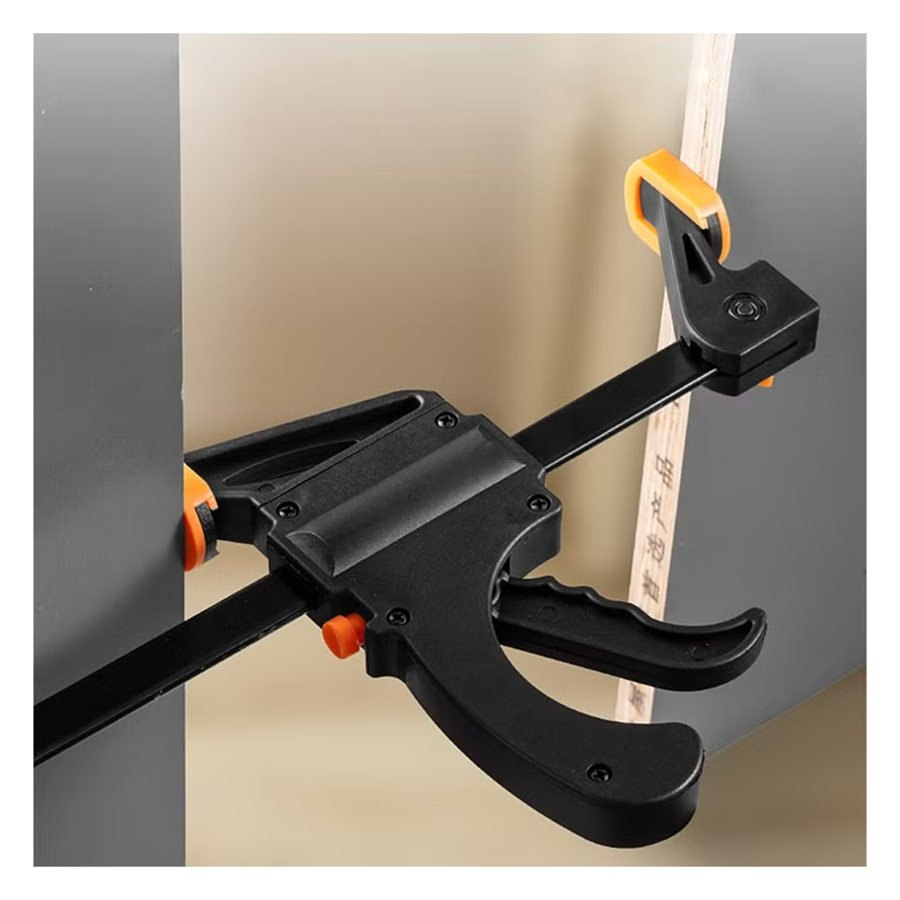
单手快速夹 300 mm钢轨单手快速夹具。
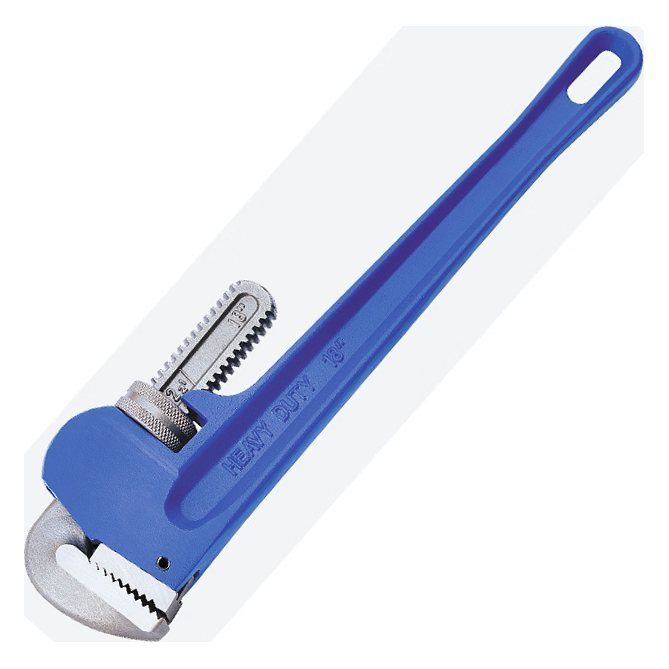
管子钳 14英寸 （350 mm）14英寸可调锻钢管子钳。
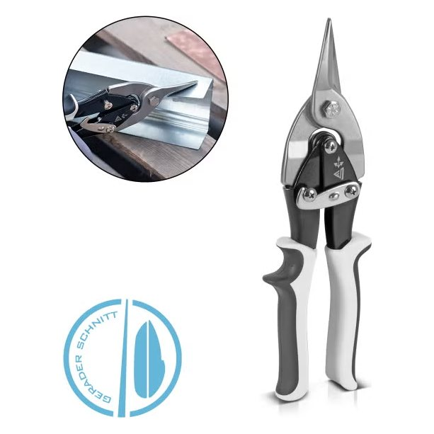
直剪航空铁皮剪 250 mm铬钒钢直剪铁皮剪，软握把。

310毫升骨架式打胶枪手动打胶枪，适配310毫升胶筒。